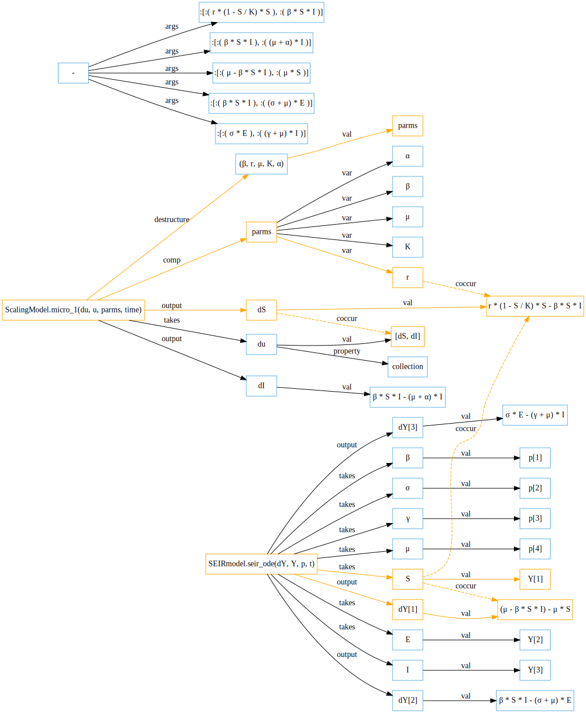
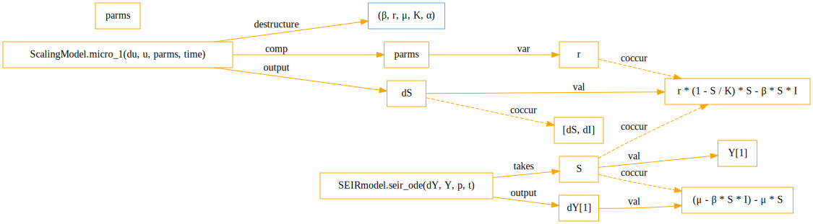

Knowledge Extraction
Documents
SemanticModels.jl takes the opinion that the source code and documentation is more valuable than the scientific papers themselves, even though traditional scientific incentive systems focus on only the papers.
Since natural language text is primarily being used for context, understanding, and disambiguation of code information, we use rules-based methods to extract definitions and conceptual connections. The Automates framework developed at the University of Arizona is very helpful for writing rules-based information extraction software. We have made upstream contributions to the Automates repository.
The primary focus of this document is the extraction of scientific knowledge from codebases. We start by describing the natural language information extraction pipeline.
Information Extraction for Semantic Modeling
To select knowledge elements that should be present in knowledge graphs, we conduct information extraction on various components of our source files, including:
- Scientist/programmer-contributed comments within source code files.
- Code phenomena such as function names, parameters, and values.
Ongoing work involves building extractors for:
- Research publications.
- Documentation for libraries and frameworks utilized within the domains of epidemiology and information diffusion.
Information Extraction Pipeline
- Process source files including research papers, source code, and documentation files into plain text or JSON document formats.
- Extract natural language text such as docstrings and comments.
- Parse source code with to identify function names and parameters.
- Match modeling text concepts with code variables using lexical-tokens.
- Run Automates rule-based extraction on the text associated with each code concept.
- Create knowledge elements (e.g., vertices and edges) from the tuples associated with rule matches.
SemanticModels has created rules to extract phenomena such as definitions of parameters. These same parameters can then be recognized within source code, beginning with lexical matching for mapping human language definitions to specific source code instantiations.
We are currently in the process of collecting and annotating ground truth data to use in constructing machine learning models to do information extractions based on information elements of interest that we identify in use case planning for meta-modeling related functionalities users will be able to work with.
Code
SemanticModels currently supports extracting knowledge from the static syntactic level information that is accessible from the source code. We use the same Julia code parser as the julia program.
This parser takes text representations of Julia code and returns an abstract syntax tree (AST). We then walk this AST looking for Julia program expressions that create information. For example, function definitions, variable assignments and module imports. We recurse into the function definitions to find the local variable definitions (and closures) used in implementing the functions.
This form of static program analysis provides a more direct way to access user defined functions. However it cannot access the type information and run time values. For this we use Cassette.jl, which is a library for context-dependent execution. SemanticModels uses a custom compiler pass to access code infomation and extract information at compile time. In addition, we use the overdub component of Cassette to build a tracer for capturing run time values. Since Julia syntax is very regular and metaprogramming is a standard (albeit advanced) practice in the Julia community, the syntax trees and CodeInfo objects are designed to be manipulated programmatically, which makes writing recursive generic syntax extraction rules straightforward.
Example
We can read in the file examples/epicookbook/notebooks/KeelingRohani/SISModel.jl
using DifferentialEquations
# # Model Specifications
# - SH num of high risk susceptible
# - IH num of high risk infected
# - SL num of low risk susceptible
# - IL num of low risk infected
# # Parameters
# - beta represents the determines the contact and transmission rates
# - gamma the rate at which treatment is sought
function sis_ode(du,u,p,t)
SH,IH,SL,IL = u
betaHH,betaHL,betaLH,betaLL,gamma=p
du[1]=-(betaHH*IH+betaHL*IL)*SH+gamma*IH
du[2]=+(betaHH*IH+betaHL*IL)*SH-gamma*IH
du[3]=-(betaLH*IH+betaLL*IL)*SL+gamma*IL
du[4]=+(betaLH*IH+betaLL*IL)*SL-gamma*IL
end
parms =[10,0.1,0.1,1,1]
init=[0.19999,0.00001,0.799,0.001]
tspan=tspan = (0.0,15.0)
sis_prob = ODEProblem(sis_ode,init,tspan,parms)
sis_sol = solve(sis_prob,saveat=0.1);
using Plots
plot(sis_sol,xlabel="Time (Years)",ylabel="Proportion of Population")and run it through the code syntactic extractor, which will produce the following information:
┌ Info: script uses modules
│ modules =
│ 2-element Array{Any,1}:
│ Any[:DifferentialEquations]
└ Any[:Plots]
┌ Info: script defines functions
│ funcs =
│ 1-element Array{Any,1}:
│ :(sis_ode(du, u, p, t)) => quote
│ #= none:28 =#
│ (SH, IH, SL, IL) = u
│ #= none:29 =#
│ (betaHH, betaHL, betaLH, betaLL, gamma) = p
│ #= none:30 =#
│ du[1] = -((betaHH * IH + betaHL * IL)) * SH + gamma * IH
│ #= none:31 =#
│ du[2] = +((betaHH * IH + betaHL * IL)) * SH - gamma * IH
│ #= none:32 =#
│ du[3] = -((betaLH * IH + betaLL * IL)) * SL + gamma * IL
│ #= none:33 =#
│ du[4] = +((betaLH * IH + betaLL * IL)) * SL - gamma * IL
└ end
┌ Info: script defines glvariables
│ funcs =
│ 5-element Array{Any,1}:
│ :parms => :([10, 0.1, 0.1, 1, 1])
│ :init => :([0.19999, 1.0e-5, 0.799, 0.001])
│ :tspan => :(tspan = (0.0, 15.0))
│ :sis_prob => :(ODEProblem(sis_ode, init, tspan, parms))
└ :sis_sol => :(solve(sis_prob, saveat=0.1))
┌ Info: sis_ode(du, u, p, t) uses modules
└ modules = 0-element Array{Any,1}
┌ Info: sis_ode(du, u, p, t) defines functions
└ funcs = 0-element Array{Any,1}
┌ Info: sis_ode(du, u, p, t) defines glvariables
│ funcs =
│ 6-element Array{Any,1}:
│ :((SH, IH, SL, IL)) => :u
│ :((betaHH, betaHL, betaLH, betaLL, gamma)) => :p
│ :(du[1]) => :(-((betaHH * IH + betaHL * IL)) * SH + gamma * IH)
│ :(du[2]) => :(+((betaHH * IH + betaHL * IL)) * SH - gamma * IH)
│ :(du[3]) => :(-((betaLH * IH + betaLL * IL)) * SL + gamma * IL)
└ :(du[4]) => :(+((betaLH * IH + betaLL * IL)) * SL - gamma * IL)
┌ Info: Edges found
└ path = "examples/epicookbook/notebooks/KeelingRohani/SISModel.jl"
(:Modeling, :takes, :parms, :([10, 0.1, 0.1, 1, 1]))
(:Modeling, :has, :parms, :prop_collection)
(:Modeling, :takes, :init, :([0.19999, 1.0e-5, 0.799, 0.001]))
(:Modeling, :has, :init, :prop_collection)
(:Modeling, :structure, :tspan, :((0.0, 15.0)))
(:Modeling, :comp, :tspan, 0.0)
(:Modeling, :comp, :tspan, 15.0)
(:Modeling, :output, :sis_prob, :(ODEProblem(sis_ode, init, tspan, parms)))
(:Modeling, :input, :sis_ode, Symbol[:init, :tspan, :parms])
(:Modeling, :output, :sis_sol, :(solve(sis_prob, saveat=0.1)))
(:Modeling, :input, :sis_prob, Symbol[Symbol("saveat=0.1")])
("Modeling.sis_ode(du, u, p, t)", :destructure, :((SH, IH, SL, IL)), :u)
("Modeling.sis_ode(du, u, p, t)", :comp, :u, :SH)
("Modeling.sis_ode(du, u, p, t)", :comp, :u, :IH)
("Modeling.sis_ode(du, u, p, t)", :comp, :u, :SL)
("Modeling.sis_ode(du, u, p, t)", :comp, :u, :IL)
("Modeling.sis_ode(du, u, p, t)", :destructure, :((betaHH, betaHL, betaLH, betaLL, gamma)), :p)
("Modeling.sis_ode(du, u, p, t)", :comp, :p, :betaHH)
("Modeling.sis_ode(du, u, p, t)", :comp, :p, :betaHL)
("Modeling.sis_ode(du, u, p, t)", :comp, :p, :betaLH)
("Modeling.sis_ode(du, u, p, t)", :comp, :p, :betaLL)
("Modeling.sis_ode(du, u, p, t)", :comp, :p, :gamma)
("Modeling.sis_ode(du, u, p, t)", :output, :(du[1]), :(-((betaHH * IH + betaHL * IL)) * SH + gamma * IH))
("Modeling.sis_ode(du, u, p, t)", :input, :(-((betaHH * IH + betaHL * IL)) * SH), Symbol[Symbol("gamma * IH")])
("Modeling.sis_ode(du, u, p, t)", :output, :(du[2]), :(+((betaHH * IH + betaHL * IL)) * SH - gamma * IH))
("Modeling.sis_ode(du, u, p, t)", :input, :(+((betaHH * IH + betaHL * IL)) * SH), Symbol[Symbol("gamma * IH")])
("Modeling.sis_ode(du, u, p, t)", :output, :(du[3]), :(-((betaLH * IH + betaLL * IL)) * SL + gamma * IL))
("Modeling.sis_ode(du, u, p, t)", :input, :(-((betaLH * IH + betaLL * IL)) * SL), Symbol[Symbol("gamma * IL")])
("Modeling.sis_ode(du, u, p, t)", :output, :(du[4]), :(+((betaLH * IH + betaLL * IL)) * SL - gamma * IL))
("Modeling.sis_ode(du, u, p, t)", :input, :(+((betaLH * IH + betaLL * IL)) * SL), Symbol[Symbol("gamma * IL")])This extractor provides edges to the Knowledge Graphs. Once the extraction is complete, the knowledge graph can be stored and transmitted to scientists across many disciplines. These knowledge graphs are a compact representation of the code and text. As new papers and codes are written, they can be ingested into an online graph database providing access to many scholars.
Reconciliation and Disambiguation
As our information extraction pipeline outlined above illustrates, the task of knowledge graph construction implicitly requires us to either assert or infer a crosswalk between (1) vertices extracted from text and vertices extracted from code with a common higher-level source (e.g., a published paper that is associated with source code that also includes comments); and (2) vertices (and by extension, edges) that are already present in the graph, when the combined information conveyed by the user-provided vertex name, and provided/inferred vertex type is not a sufficient guarantee of uniqueness, and/or a reliable signal of user intent (e.g., the user may seek to (1) enforce uniqueness by differentiating a new vertex, $v_i$, from lexically identical but semantically different vertices $\in V$, or (2) insert $v_i$ iff $V \cap_{semantic} v_i = \emptyset$, regardless of their lexical (dis)similarity).
When two or more knowledge artifacts share provenance (e.g., the narrative text, programmer-provided comments, and source code that, when taken in tandem, represent a single recipe in the Epicookbook), we currently consider code text and markdown/comments text as strings, and use rule based learning to associate text with code objects; these lexical matches are then parsed in an effort to extract edges of the type representation (abbreviated repr), which connect a (code) type source vertex to a (scientific) concept destination vertex.
We intend to extend this approach in the future by: (1) creating new syntactical parsing rules to capture additional relationships; (2) considering the ways in which information related to scope, and/or position within the program-level call graph can be informative for the purpose of co-reference resolution; and/or (3) representing both sources of text sequences as real-valued vectors, to determine whether cosine similarity and/or RNN-based approaches can help to detect co-referential lexical elements [1].
With respect to the question of how to best assess/resolve ambiguity surrounding the uniqueness of a vertex upon ingestion, we currently guarantee uniqueness by appending a randomly generated string to the concatenation of the (raw-text) vertex name and the (schema-consistent) vertex type. This approach biases the graph toward smaller, disconnected subgraphs, and makes it harder for us to benefit from the semantic equivalence that often exists when different text and/or code artifacts from the same domain are parsed for the purpose of ingestion.
We intend to develop a more nuanced approach to vertex ingestion that incorporates exogenous, domain-specific information (for example, a lookup table of parameters that are commonly used within the epidemiological literature; known model imports, etc.). We can begin by manually constructing a dataset with examples of how these known elements are represented in code, and can then train an NER model to detect such references when they occur, so that we can avoid insertion of lexically distinct but (fuzzily) semantically equivalent vertices and encourage semantically meaningful consolidation, resulting in a more connected, parsimonious graph.
We may also find it helpful to leverage user-provided metadata (such as source/provenance information), and/or unsupervised learning techniques, including clustering methods, for this task as the complexity of the graph grows, and/or knowledge artifacts from additional domains with potentially conflicting named entities are introduced. We may also find it helpful to compare the semantic saliency of the (graph-theoretic) neighborhood(s) that might result from either the source or destination vertex of a new edge being mapped to each of a set of feasible existing vertices; this approach could also benefit from provenance-related metadata.
Reasoning
Once the information is extracted from the documentation and code, we can visualize the knowledge as a graph.

This knowledge graph contains all the connections we need to combine components across models. Once can view this combination as either a modification of one model by substituting components of another model, or as the automatic generation of a metamodel by synthesizing components from the knowledge graph into a single coherent model. Further theoretical analysis of metamodeling and model modification as mathematical problems is warranted to make these categories unambiguous and precisely defined.
Once we identify a subgraph of related components we can identify the graft point between the two models. We look for a common variable that is used in two models, specifically in a derivative calculation. We find the variable S which appears in dS and dY (as S=Y[1] and dY = derivative(Y)). The knowledge that dS, dY are derivatives comes from the background knowledge of modeling that comes from reading textbooks and general scientific knowledge, while the fact that S and Y[1] both appear in an expression mu-beta*S*I - mu*S comes from the specific documents and codebases under consideration by the metamodeler.

This subgraph must then extend out to capture all of the relevant information such as the parameter sets encountered, the function calls that contain these variables and expressions. We have found the largest relevant subgraph for some unspecified definition of relevance. From this subgraph, a human modeler can easily instruct the SemanticModels system on how to combine the SEIRmodel and ScalingModel programs into a single model and generate a program to execute it.
In order to move beyond this relatively manual approach to model modification and metamodeling, it is helpful to frame each of our intended use cases as an optimization problem, in which the scientist's required unitful input(s) and/or unitful output(s) (including expected deviation from observed/expected patterns, in the case of model validation) can be formally expressed as constraints, and relevance can be objectively and quantifiably represented, so that competing feasible flows can be assessed, ranked, and returned to the scientist to augment their understanding. The specification of the objective function, choice of traversal algorithm(s), and the use of edge weights to convey algorithmically meaningful information, will vary by use case.
For example, the metamodeling use case, in which the scientist begins with a vector of known unitful input and a vector of unitful output whose value is unknown, can be formulated as an $s-t$ max flow problem, with our input vertex as $s$, our output vertex as $t$, and edge weights corresponding to the frequency with which a given edge is empirically observed within a domain-specific text and code corpus. To ensure tractability at scale, we may want to consider a weighting scheme to avoid integer constraints. This approach may also help us to identify disconnected subgraphs, which, if linked by cut-crossing edges, would represent a feasible flow; the scientific insight here is that such a set of edges might represent "missing" functions capable of transforming the "input" src vertex of a cut-crossing edge with its output dst vertex. These function(s) could then be ingested or written by scientists.
While we intend to proceed with algorithmic development of this nature in the near term, it's worth noting that the goal of this project is to augment scientists and their workflows. As such, we envision a human-in-the-loop, semi-automated approach, in which the scientist is in control and has the ability to instruct the machine by providing information about what the scientist already knows, and what they wish to do with that knowledge (e.g., modify, combine, validate) existing models and scripts.
Any API that supports augmenting scientists will require some human intervention in the reasoning and generation stages as the system must get input from the user as to the questions being asked of it. We view this to analogous to a data analyst working with a database system: a query planning system is able to optimize queries based on knowledge about the schema and data statistics, but it must still wait for a human to provide a query. In this way, even as our development efforts proceed, SemanticModels will rely upon user guidance for reasoning and generation tasks.
API reference
AbstractCollectorsubtypes of AbstractCollector support extracting and collecting information from input sources.
FuncCollector{T} <: AbstractCollectorcollects function definitions and names
MetaCollector{T,U,V,W} <: AbstractCollector
collects multiple pieces of information such as
- exprs: expressions
- fc: functions
- vc: variable assignments
- modc: module imports
SemanticModels.Parsers.defs — Method.defs(body)collect the function definitions and variable assignments from a module expression.
SemanticModels.Parsers.findassign — Method.findassign(expr::Expr, name::Symbol)findassign walks the AST of expr to find the assignments to a variable called name.
This function returns a reference to the original expression so that you can modify it inplace and is intended to help users rewrite expressions for generating new models.
See also: findfunc.
SemanticModels.Parsers.findfunc — Method.findfunc(expr::Expr, name::Symbol)findfunc walks the AST of expr to find the definition of function called name.
This function returns a reference to the original expression so that you can modify it inplace and is intended to help users rewrite the definitions of functions for generating new models.
SemanticModels.Parsers.funcs — Method.funcs(body)collect the function definitions from a module expression.
SemanticModels.Parsers.inexpr — Method.inexpr(expr, x)Simple expression match; will return true if the expression x can be found inside expr. inexpr(:(2+2), 2) == true
SemanticModels.Parsers.parsefile — Function.parsefile(path)read in a julia source file and parse it.
Note: If the top level is not a simple expression or module definition the file is wrapped in a Module named modprefix.
SemanticModels.Parsers.postwalk — Method.postwalk(f, expr)Applies f to each node in the given expression tree, returning the result. f sees expressions after they have been transformed by the walk. See also prewalk.
SemanticModels.Parsers.prewalk — Method.prewalk(f, expr)Applies f to each node in the given expression tree, returning the result. f sees expressions before they have been transformed by the walk, and the walk will be applied to whatever f returns. This makes prewalk somewhat prone to infinite loops; you probably want to try postwalk first.